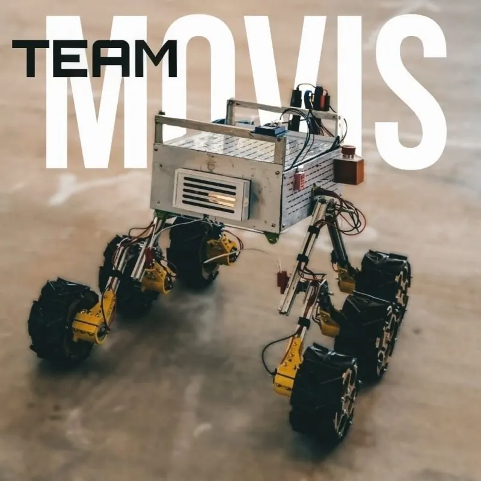
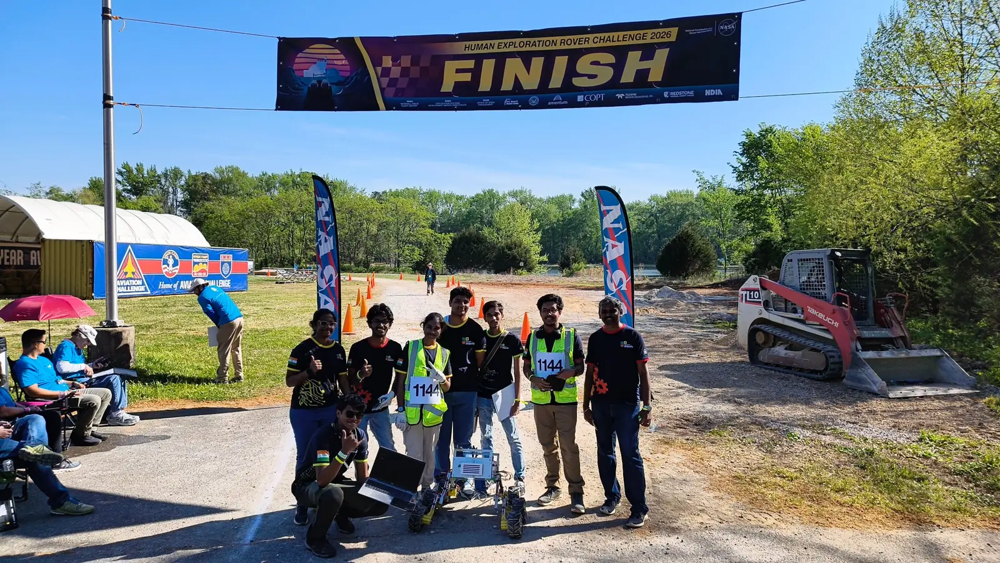
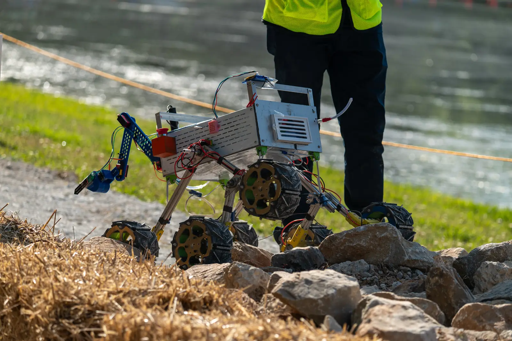
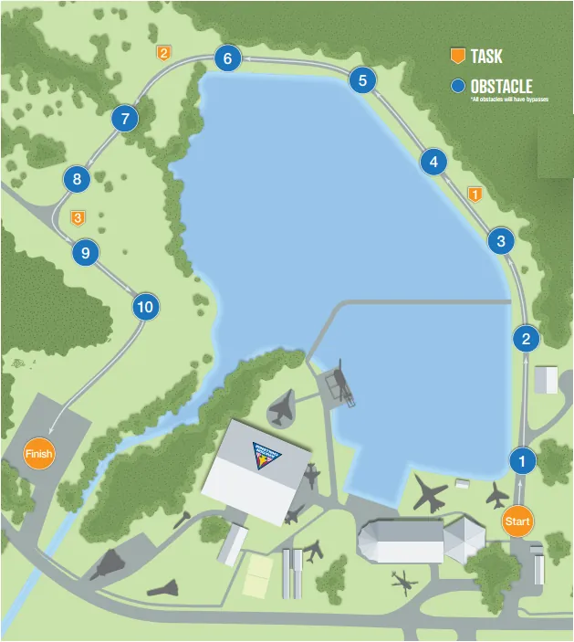
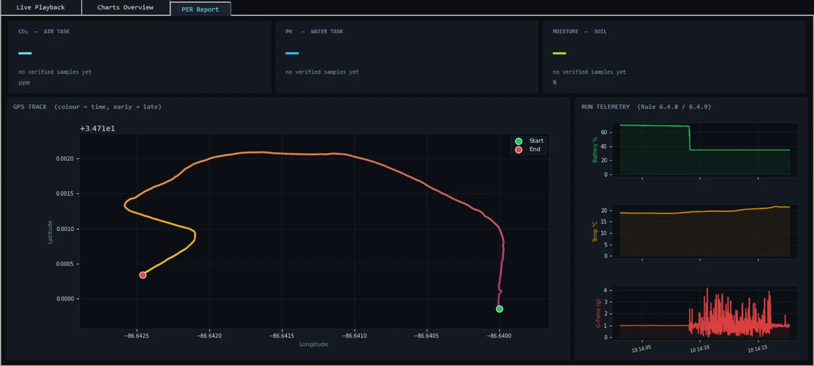
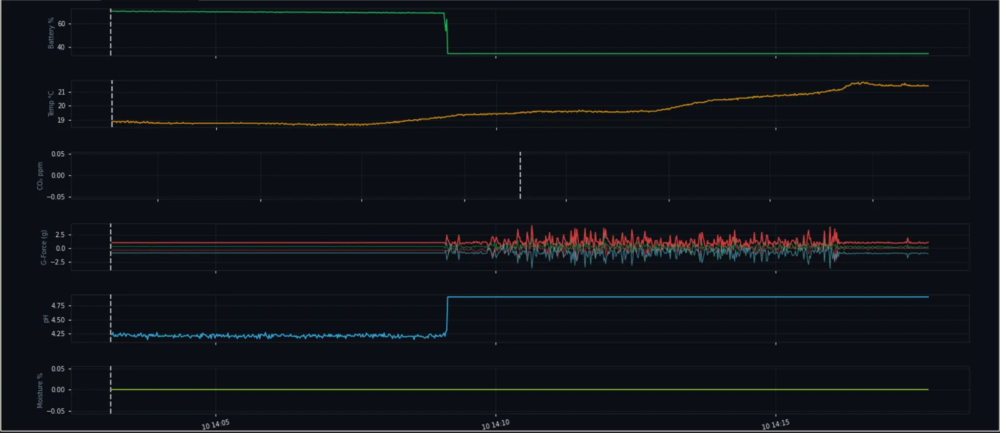
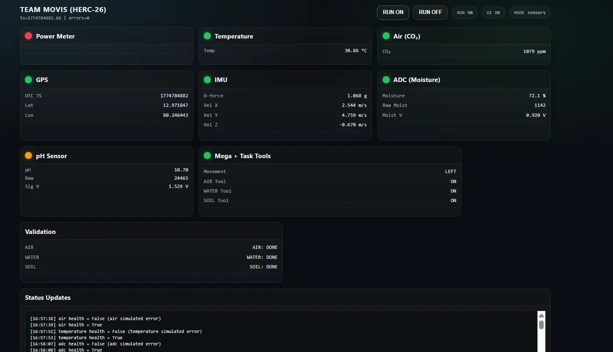
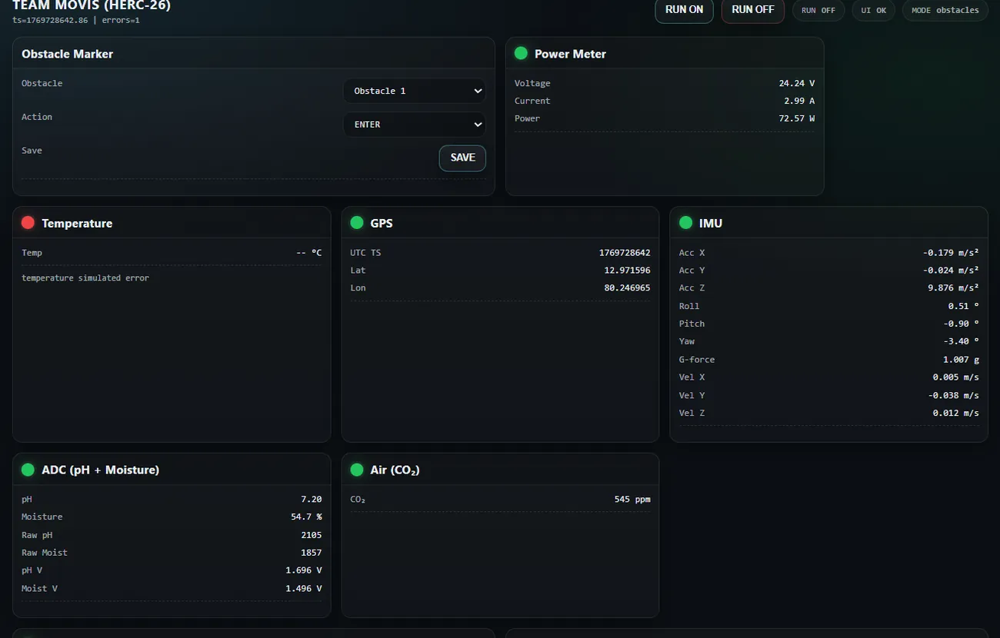
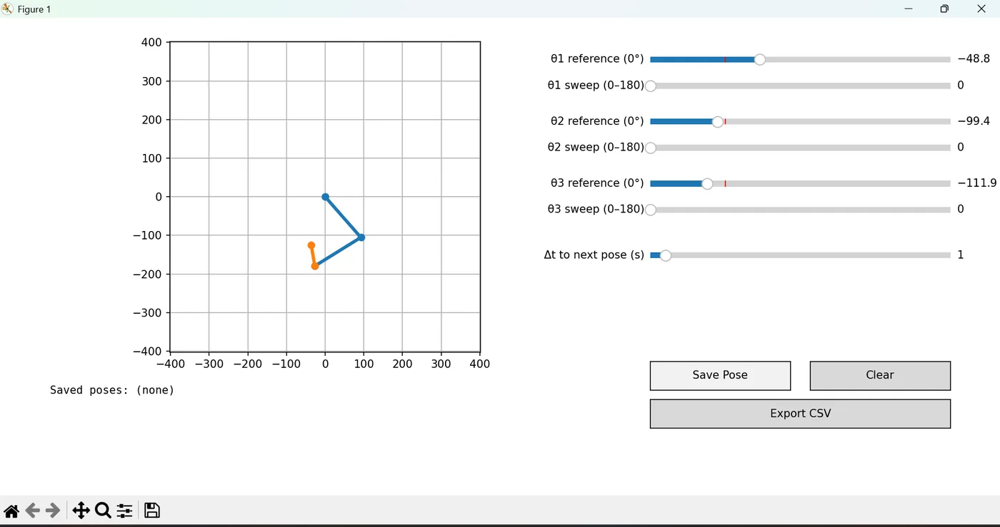
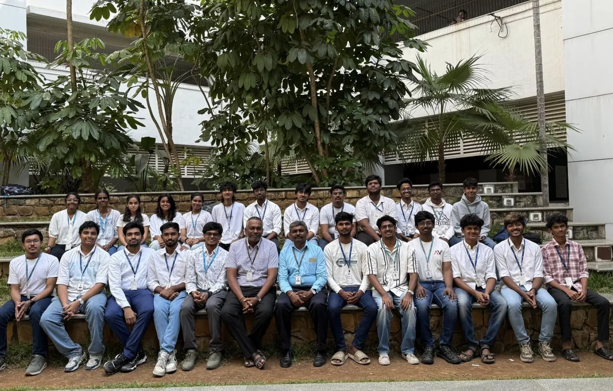

HERC-26 rover control and data-logging software
The software that drives, senses and samples on our rover: a Raspberry Pi that logs every reading, an Arduino Mega that moves the wheels and tools, and a dashboard any phone on the Wi-Fi can open.

Five roles in two years
Joined Team MOVIS as a member in March 2024 and took on a new responsibility almost every year since. Team Lead and Safety Officer are the current ones, highlighted below. Roles and dates are from the LinkedIn profile, as of May 2026.
- Team LeadcurrentJul 2025 – present
- Leads the team through HERC 2026: entry 1144, Huntsville, April 2026.
- Safety OfficercurrentAug 2025 – present
- Responsible for safety across the team's work. On the rover itself the safeguard is the 500 ms RC failsafe described further down. LinkedIn top skills: Industrial Safety, Workplace Safety, Safety Management.
- Programming Team LeadOct – Nov 2025
- Led the programming team in the weeks before the first HERC-26 commit on 22 December 2025.
- Finance ManagerJan – Nov 2025
- Managed the team's finances through 2025.
- MemberMar 2024 – present
- Joined two years before the challenge.
On the course
The rover ran the Human Exploration Rover Challenge course around the lake: ten obstacles, three task stops, start by the hangars and finish on the far side.



Replaying the logged run
The Pi's SQLite log is opened afterwards in a playback viewer built with Tkinter and matplotlib. It replays the run at up to 10× speed, charts every channel, and builds a Post-Excursion Review: the GPS track, run telemetry, and an average for each science task taken only from verified samples, with outliers outside 1.5 × IQR dropped.


G-force is flat at 1 g until about 14:09, then spikes up to about 4 g until about 14:16, matching the stretch on rough ground.
The battery percentage drops from about 70% to about 35% in one step at the moment driving starts, then stays flat.
From about 19 °C to about 21 °C over the run.
CO₂ and soil moisture log zero for the whole session, pH steps from about 4.25 to 4.9, and none of the three tasks recorded a verified window, so the PER tiles stay empty.
One rover, five responsibilities
- Drive
- Six wheels, differential steering, controlled from a FlySky RC transmitter over iBUS. The Mega ramps speed smoothly and stops everything if the radio goes quiet for half a second.
- Sample
- Soil, water and air each have their own switch and their own servo, driven through a PCA9685 board. Soil and water also have a linear actuator, and the water tool runs a peristaltic pump for 5 seconds.
- Sense
- Temperature, orientation and g-force, GPS position, soil moisture, water pH, CO₂ and battery power, each behind its own driver that can fail without taking the others down.
- Decide what counts
- A reading only counts for the mission after the tool has run long enough for the sensor to settle. A small state machine on the Pi tracks that for every tool.
- Show and keep
- Every poll is written to a JSONL file and to a SQLite database with session tracking, and served to a live dashboard in the browser.
Two computers, one shared picture
The Mega owns anything that must react in milliseconds. The Pi owns everything that needs to be recorded. They share a single 9-byte status frame over USB.
Redrawn from the firmware header and the project wiki. Poll rate comes from config.xml (1 Hz as shipped).
What the operator sees


What changed
The January screenshot is in obstacles mode, with a marker for logging when the rover enters and leaves each obstacle. The March build above, in sensors mode, adds a Mega and task tools card showing movement and which tools are on, a validation card and a status log.
One screen, laptop or rover
The simulated stack returns exactly the same snapshot structure as the real drivers, so the dashboard, logger and validation logic were built and tested on a laptop before any hardware was wired.
A light per sensor
Each card has a health light. A sensor that fails turns its own light red and writes one line to the status log. Everything else keeps updating.
Faults on purpose
The simulator fails each sensor about 1% of the time, so error handling is exercised constantly instead of waiting for a field failure.
The 9-byte status frame
The Mega pushes one frame every 100 ms. Two fixed sync bytes let the Pi find the start of a frame again after a glitch. Change the switches to see what the Mega would send.
Smooth on the sticks, hard stop on silence
Left and right motors get base ± turn. Turning authority shrinks as speed rises.
Speed changes by at least 5 PWM units per 20 ms tick, and by more when the gap to the target is large, capped at 20. From a standstill to full speed (160 of 255) takes 10 ticks, about 0.2 seconds.
Failsafe
No valid RC signal for 500 ms stops all motors, actuators and the pump, moves the servos to a safe position and clears every tool flag. The next frame to the Pi reports it straight away.
Validation timers
Switching a tool on does not make its readings valid at once. Soil has to reach the probe, and a pH electrode needs time to settle. Pick a tool and start it, at a faster speed if you do not want to wait 95 seconds.
Timings are the values in the validation module: air counts at once, soil waits 10 s, water waits 65 s for the water to reach the sensor and 30 s for the electrode to settle. Then 15 readings count, one per poll. A failed read during the window does not use up a slot.
Seven measurements, six kinds of part
| Measures | Part | Link | Detail |
|---|---|---|---|
| Temperature | TMP102 | I²C 0x48 | Reported in Celsius. The address is listed in config.xml. |
| Orientation, g-force | BNO055 IMU | I²C 0x28 | Roll, pitch, yaw, acceleration and velocity. Calibration offsets are stored in config.xml. |
| pH, soil moisture | ADS1115 ADC | I²C 0x49 | Raw counts, volts and calibrated values. The pH probe is calibrated at two points. |
| CO₂ | MH-Z19C | UART | 9-byte binary protocol, checksum checked, readings outside 0 to 10,000 ppm rejected. |
| Position | GPS module (NEO-6M) | Serial NMEA | Only sentences with a valid fix are accepted. |
| Power | PZEM-017 | RS485 Modbus | Voltage, current and power; the RS485 direction pin is driven through libgpiod. |
A Pi 5 detail. Adafruit's Blinka imports lgpio, which fails on the Pi 5's new GPIO chip. The team wrote a small shim with the same interface on top of libgpiod, so the Adafruit drivers run unchanged.
Rules written into the wiki
- A sensor connects, reads and reports. It never prints and never exits the program.
- Failures raise errors. Every sensor has its own exception types, and nothing returns a quiet 0, −1 or None when the hardware has actually failed.
- The simulator mirrors the real thing. Same function names, same keys, same errors, so switching from laptop to rover changes no other code.
- The web server only serves. It hands out the latest snapshot and never reads a sensor.
- The browser only displays. Countdowns and timers are computed on the Pi.
- Logging never stops. The sensor loop keeps running and writing whether or not a browser, or even the Wi-Fi, is there.
- No hardware addresses in drivers. Ports, I²C addresses and calibration live in one XML file with a GUI editor that backs up before every save.
When the I²C bus kept failing
During testing the whole I²C bus became unreliable. Any pause between reads produced Errno 121, and even back-to-back reads failed 5 to 10% of the time. It hit the ADS1115, the BNO055 and the TMP102 together, which pointed at the bus itself, probably a bad solder joint.
Re-initialising the bus fixed it. That exposed a second problem: the reconnect code called close() then setup(), but the ADC driver still believed it was connected and skipped the re-init, so the bus stayed stuck. The soil filter also took 11 reads with a 10 ms sleep between each, which was guaranteed to fail on that bus.
The BNO055 had a separate fault: it came up in an invalid operating mode and returned zero acceleration until it was reset.
The plan
Make the loop survive a bad bus even after the board is resoldered, because connections can fail again in the field: re-initialise the bus on reconnect, drop the sleeps, and reset the IMU when it comes back.
Plan and commit dated 11 April 2026. This page does not claim it was verified on the rover.
Posing the arm on a laptop first

From sliders to servo angles
Position the three links, save a pose, set the time to the next one, and export the path as a CSV of time and three joint angles. Those poses go into the soil arm sketch as a trajectory that the three servos play back through the PCA9685 board.
It let the team choreograph the scoop before the arm was bolted to the rover.
Seventeen weeks of commits
- First commit.
- pH reading solved.
- Telemetry app and battery level added.
- Mega and Pi talking over I²C, IMU and GUI before first test.
- Rover movement working; water and soil arm base code.
- Final Mega code.
- Throttle stick fix and throttle rate change.
- Water timing fixed.
- I²C fixes and the resilience plan.
- Pull requests #35 (throttle fix) and #36 merged.
Team MOVIS
